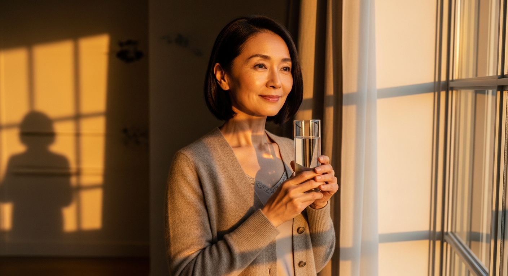
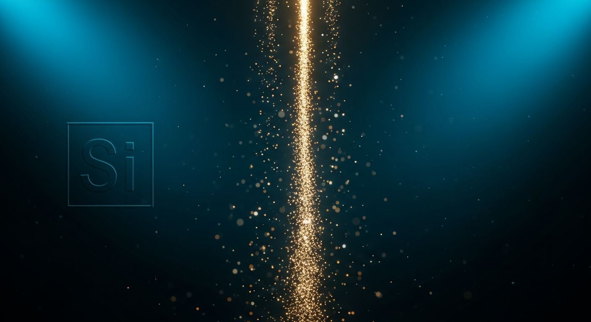
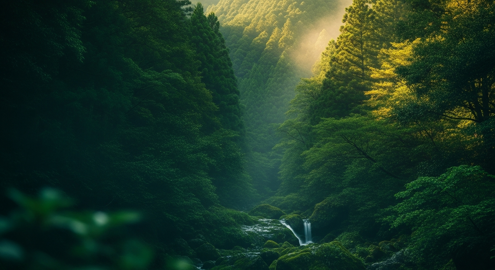
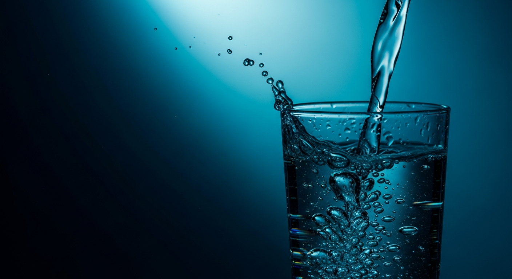

YouTubeは予告なく Private/削除されるため 全本ローカル保存済み。HTML上ではブラウザ内再生可能。
仲野メソッドは業種非依存。富裕層向けトーン・高級感の参考として。

✓ 冒頭2秒に Who（年齢を意識する女性）と What（飲料）
✓ ベネフィット（"内側から"の変化）先出し
Imagen 4.0 / 16:9 / 1回生成
OK判定: 50代女性・暖色逆光・水を持つ・上品トーン全て成立

✓ 悩みの共感（"年齢で失う"）
✓ 暗転で画変化（仲野2-8 飽きさせない）
✓ 「Si」が背景に映ってる→ シリカ＝Si を視覚で刷り込み
Imagen 4.0 / 16:9 / 一発OK
シリカ粒子が縦に流れ落ち＋"Si"文字が背景に出現

✓ 解決方法＝商品提示
✓ Whatが完成
✓ 産地で信頼の土台
Imagen 4.0 / 16:9 / 背景のみ生成（ボトルは実写合成）
大分玖珠の渓谷＋湧水＋左1/3空きで合成スペース確保
提供されたミチル実ボトル画像（PET透明・グレーキャップ・青ラベル・シリカ72mg）を切り抜き → 左1/3に配置

✓ 根拠の数値訴求
✓ シズル感＝注ぐスローモーション（仲野2-8）
✓ メリット出すが既にC1でベネフィット先出し済み
Imagen 4.0 / 16:9 / 商用品質一発
左1/3が空いた完璧な構図 → 数値「72」配置スペース確保
✓ オファー＝指名検索行動
✓ 棚設置未確定なので店内導線CTAは封印
①「ミチルシリカ」指名検索数増 ②新宿区LP流入増 ③カラーミー注文住所変化
Imagen 4.0 / 16:9 / 背景のみ
ベージュ和紙質感→ロゴ＋検索ボックス重ね
用途: 鈴木さんがChatGPT/Midjourney/別Imagen等で再生成する場合や、構成を一覧で確認したい場合に使用。
各プロンプトは 16:9 / no text / no logo 指定済み。アスペクト比やNEG指定はツールに合わせて調整してください。
Cinematic editorial portrait of an elegant Japanese woman, age 55, soft natural beauty, fine wrinkles around eyes showing wisdom, slight serene smile, wearing a luxurious oatmeal-beige cashmere cardigan with subtle silk camisole underneath, holding a tall thin clear glass of pure water with both hands at chest height, standing slightly to the right third of the frame near a tall paneled window, warm golden hour backlight from window streaming in, soft amber rim light on her hair and shoulder, deep golden-cream tones, gentle reflection on the glass surface, minimalist Tokyo upscale apartment interior, beige linen curtain softly diffusing light, warm beige wood floor visible, faint shadow play on the cream wall, shot on Hasselblad H6D-100c with 80mm f/2.8 lens, shallow depth of field f/2.8, ISO 200, soft golden hour 5500K white balance, high-end Vogue Japan editorial style, color graded with warm Kodak Portra 800 film emulation, cinematic 16:9 widescreen aspect ratio, ultra-photorealistic, hyper-detailed skin texture with natural pores, no makeup heavy look, no text, no logo, no watermark
text, letters, logo, watermark, harsh shadows, cartoon, young woman, casual clothing, plastic bottle, heavy makeup
Cinematic abstract macro photography of luminous golden mineral particles cascading vertically in a thin luminous waterfall stream, like falling stardust or refined sand of light, particles range from 0.5mm to 3mm with soft amber and warm white inner glow, set against a deep navy-to-black gradient background with soft volumetric blue side lighting, ethereal floating dust motes scattered around the main stream, subtle scientific element symbol 'Si' (capital S, lowercase i) softly embossed in white-blue tone on the dark background on the left third, almost like a watermark, ultra-slow shutter speed motion trails on falling particles, ethereal light beam from above, shot on Phase One IQ4 with 120mm macro lens, f/4 aperture, professional pharmaceutical commercial photography style, premium medical-grade aesthetic, deep teal and navy color palette with golden accent, dramatic chiaroscuro lighting, 16:9 cinematic widescreen, ultra-sharp particle detail with bokeh background, no Japanese text, no logo, no watermark, no hourglass shape
text, characters, hourglass shape, sand on ground, bright background, colorful, cartoon, japanese characters
⚠ 重要: ボトルは生成せず、提供されたミチル実ボトル写真（PET透明・グレーキャップ・青ラベル・シリカ72mgバッジ）を切り抜き合成します。Imagenは大分・玖珠の渓谷背景プレートのみ生成。
水源: 大分県玖珠郡玖珠町・清水瀑園（しみずばくえん）／豊の国名水15選 ＝ ミチルシリカ実水源
Breathtaking cinematic landscape photography of pristine mountain forest valley in Kusu town, Oita prefecture Kyushu Japan, lush deep green forested mountains of the Kuju mountain range area, soft morning mist drifting through cedar and broadleaf forest, a hint of crystal clear spring water flowing from rocks (representing Shimizu Bakuen famous spring), dappled golden sunlight filtering through tree canopy from upper right, subtle wet moss-covered stones in mid-distance, deep emerald green and soft teal color palette with warm golden highlights, completely empty foreground with no objects, no people, no birds, the left third of the frame is intentionally clear atmospheric mist with soft green bokeh (designed for product overlay), shot on Sony A7R V with Sony 70-200mm f/2.8 GM lens at 100mm, long exposure 1/30s for soft mist movement, ISO 100, f/8 for sharpness, graduated ND filter, premium Japanese tourism board commercial style, color graded with Fuji Velvia film emulation enhancing greens and golden tones, 16:9 widescreen ultra-wide cinematic format, hyper-detailed forest texture, evokes 'Yutakanokuni Meisui 15' (Oita's 15 famous waters) atmosphere, no bottles, no products, no foreground objects, no text, no logo, no watermark
bottles, products, objects in foreground, text, logos, people, harsh sunlight, bright daytime sky, colorful elements, birds
Hyper-detailed slow-motion cinematic macro photography of crystal-clear pure mineral water pouring into an elegant tall thin Japanese-style highball glass on the right third of frame, water cascading in a perfect smooth ribbon, hundreds of tiny air bubbles suspended mid-fall, splash droplets frozen mid-air with diamond-like clarity, the glass at 70% filled showing perfect refraction and caustics, deep navy and midnight teal background with strong cyan-blue rim light from left, the glass surface catching soft cool blue highlights with a single sharp specular reflection, left third of frame is intentionally pure dark navy negative space (designed for typography overlay), shot on Phantom Flex 4K high-speed camera at 1000fps, 100mm macro lens, f/5.6, studio strobe lighting with rim light and back light separation, premium luxury beverage commercial photography style à la Evian or Voss, color graded with cool blue teal palette, deep blacks with crisp highlights, 16:9 cinematic widescreen, ultra-realistic water physics with perfect surface tension, no text, no logo, no watermark, no fruits, no ice
text, numbers, characters, ice cubes, fruit, lemon, colored water, bright background, daytime, hand
合成手順: 背景生成 → ロゴ「ミチル」をSVGで重ね → 検索ボックスUI（白丸角＋虫眼鏡＋"ミチルシリカ"＋検索ボタン）をSVGで重ね
Minimalist premium beige and cream textured background with subtle warm gradient, high-end Japanese washi paper texture with delicate fiber details and slight grain, soft directional natural daylight from upper left at 45 degrees, extremely subtle vignetting at the four corners, completely empty composition with no objects, no shadows of objects, no text marks, warm neutral palette transitioning from #f5f0e8 (upper left) to #e8ddc8 (lower right), gentle highlight glow in the upper left third, tactile paper surface with very fine texture visible at full resolution, shot on Phase One XT with Schneider 70mm at f/8, even studio lighting, premium luxury brand backdrop style à la Hermès or Aesop branding, ultra-clean composition designed as elegant typography overlay base, 16:9 widescreen aspect ratio, museum-quality print paper feel, no text, no logo, no graphics, no decorative elements, no objects, no patterns
text, logo, objects, people, products, decorative elements, dark colors, complex patterns, japanese characters
generate_images_v2.py を編集して再実行（Imagen 4 Ultra）--ar 16:9 --v 6 を追加